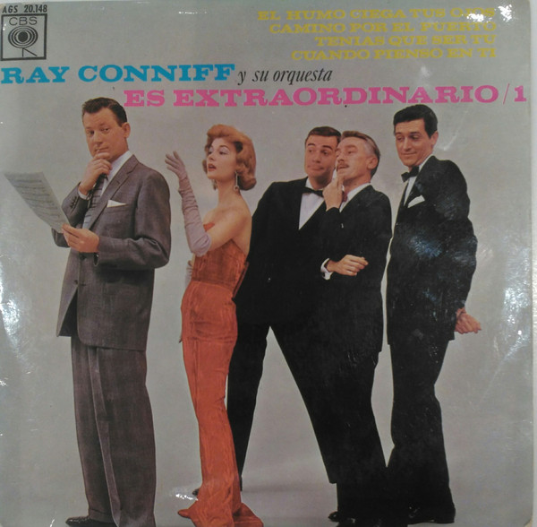

7"
Es Extraordinario / 1
Ray Conniff & His Orchestra
Media: — · Sleeve: —
—
Personal
Discogs SuggestedCA$26.02
Discogs MedianCA$26.02
Discogs HighCA$26.02
- Physical Copy ID
- BB-LP7-004
- Year
- 1963
- Label
- CBS
- Catalog #
- AGS 20.148
- Country
- ESSpain
- Genre / Style
- Jazz · Easy Listening, Big Band